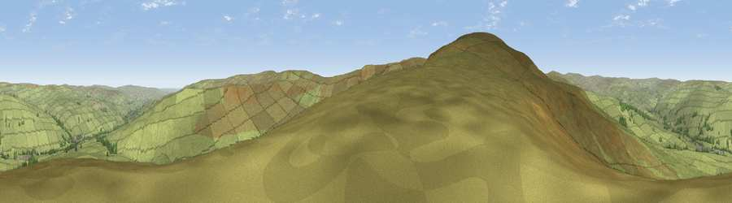

Viewpoint near Daddry Shield
#15724 in England · top 45% of its area beats it · near Daddry ShieldWhere it is
The exact computed spot (NY 88925 35775). Click the marker for map links.
The view, rendered

A 360° render of this exact spot computed from the terrain model, tree cover and land cover — summer colours, afternoon light, calibrated against photographs of famous viewpoints. Real trees, hedges and buildings will differ in detail.
The panorama
Grey silhouette: terrain skyline in each direction (720 bearings, Earth curvature and refraction included). Dashed green: skyline with trees (+15 m) and buildings (+8 m) as obstacles. Blue strip: how far the ground is visible on each bearing.
Where the view opens
Wedge length = distance to the farthest visible ground on that bearing (vegetation-aware). Rings at 10, 25 and 50 km.
What fills the view
98% grassland · 2% woodland
Angular shares of the visible panorama (visual magnitude), not map area. Landscape diversity 0.06 (0–1 Shannon).
Key numbers
More beautiful places nearby
The staircase of upgrades: each row has a higher view potential than everything closer. Driving times are estimates from straight-line distance, calibrated against real road routing — check an actual route before setting out.
| Place | Direction | Drive | Score |
|---|---|---|---|
| Viewpoint near St. John's Chapel | WSW · 1 km | ~4 min | 64.3 |
| Chapelfell Top | SW · 2 km | ~4 min | 66.2 |
| Viewpoint near Daddry Shield | S · 3 km | ~6 min | 67.0 |
| Fendrith Hill | SSW · 3 km | ~7 min | 70.0 |
| Viewpoint near Middleton-in-Teesdale | SE · 10 km | ~20 min | 70.5 |
| Dead Stones | WNW · 10 km | ~20 min | 72.8 |
| Viewpoint near Allenheads | NW · 11 km | ~21 min | 74.6 |
| Mickle Fell | SW · 14 km | ~25 min | 75.8 |
54.71685, -2.17344 · source: screening · position refined by local search. Computed location — check access rights before visiting.